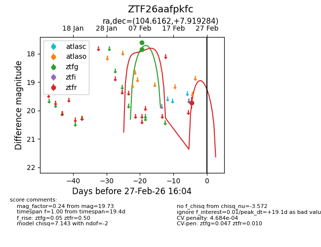
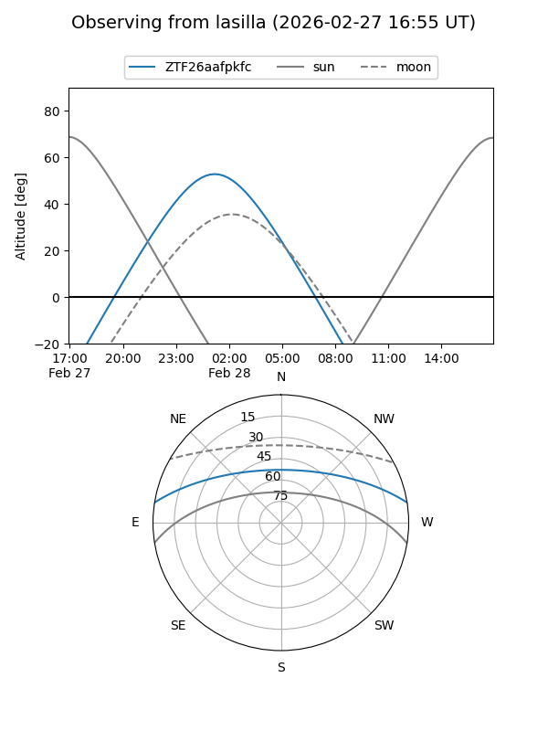
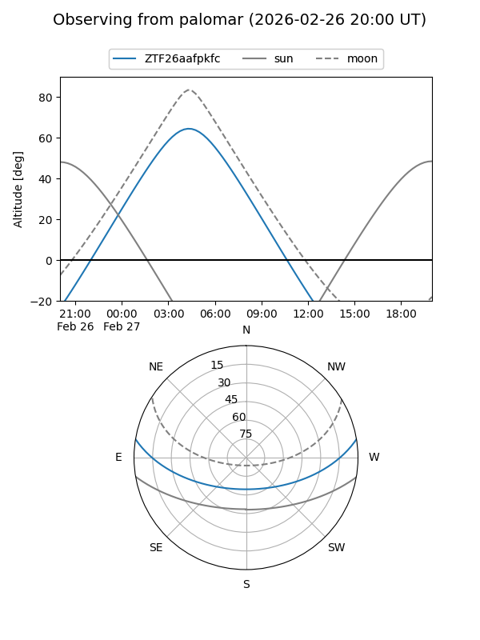
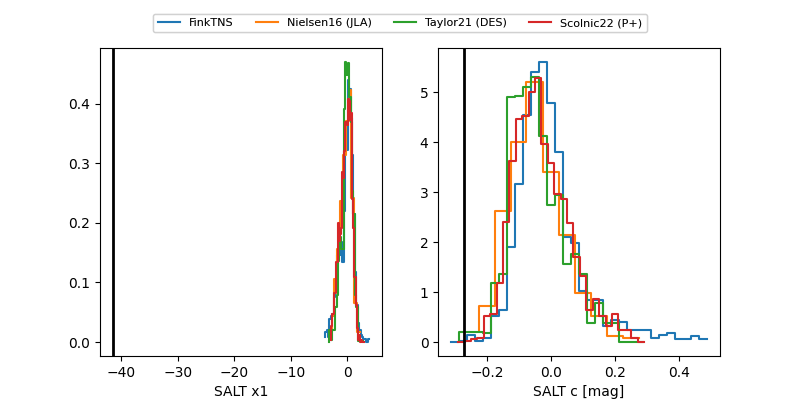

ZTF26aafpkfc
Target ZTF26aafpkfc at 2026-02-27 16:05
Aliases and brokers:
FINK: link
Lasair: link
ALeRCE: link
alt names
ZTF26aafpkfc (ztf,fink_ztf)
Coordinates:
equatorial (ra, dec) = 104.6162,+7.91928
equatorial (HMS+DMS) = 06:58:27.88,+07:55:09.42
galactic (l, b) = (206.6617,+5.15481)
Flags:
likely cv
Photometry:
last ztfg=17.85, ztfr=19.73
2 ztfg, 1 ztfr detections
Lightcurve

Visibility


Additional plots
